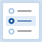

aria-activedescendant を使用したラジオグループの例
この例について

この例は、ピザの生地を選択するラジオグループと、配達方法を選択するラジオグループの 2 つのラジオグループに対して、ラジオグループパターンの機能を実装しています。
この実装では、aria-activedescendant を使用して、どのラジオボタンが視覚的にフォーカスされているかを支援技術に通知します。
類似の例は次のとおりです。
- ロービング tabindex を使用したラジオグループの例: キーボードフォーカスを管理するためにロービング
tabindexを使用するラジオボタングループ。 - 評価ラジオグループの例: 5 段階評価スケールの入力を提供するラジオグループ。
例
ピザの生地
- レギュラークラスト
- ディープディッシュ
- 薄いクラスト
ピザの配達
- 受け取り
- 宅配
- レストランで食事
アクセシビリティ機能
-
aria-activedescendantによって参照されるラジオボタンは、グラフィカルなレンダリングで表示されていない場合にスクロールして表示されます。 これは多くの状況で発生しますが、視覚障害のある利用者がブラウザのズーム機能を使用してコンテンツのサイズを拡大する場合に最も一般的です。 - CSS 属性セレクタを使用して、
aria-checked状態を視覚的な状態インジケータと同期します。 -
視覚的なキーボードフォーカスとホバーのスタイル設定には、CSS の
:hover及び:focus疑似クラスを使用します。- フォーカスインジケータはラジオボタンとラベルの両方を囲み、どのオプションが選択されているかを認識しやすくします。
- ホバーするとラジオボタンとラベルの両方の背景が変化し、ラベル又はボタンのいずれかをクリックするとラジオボタンがアクティブになることを認識しやすくします。
- 視覚障害のある利用者がインタラクティブな要素として識別できるように、ラジオボタンにカーソルをホバーするとカーソルがポインタに変わります。
- ハイコントラストが有効になっている一部のシステムでは透明な境界線が可視化されるため、フォーカスされた要素のみが可視境界線を持ちます。（訳注: フォーカスの有無の区別をつけるため、本来可視化されてしまう透明な境界線が可視化されないようにするということ） フォーカス可能な要素がフォーカスされていない場合、それらは幅 0 の境界線と、フォーカスを示すために使用される境界線と同じ幅の追加のパディングを持ちます。
-
ハイコントラスト設定がテキストコンテンツの色を変更したときに、CSS ファイル内のインライン SVG ラジオボタングラフィックが背景と十分なコントラストを持つことを保証するために、
svgグラフィックの CSSforced-color-adjustはautoに設定されます。 これにより、circle 要素のstroke及びfillの色がハイコントラストの色設定によって上書きされます。circle要素の背景をハイコントラストの背景色と一致させるために、外側のcircleのfill-opacity属性はゼロに設定され、内側のcircleのstroke-opacity属性はゼロに設定されます。forced-color-adjustを使用せずにstroke及びfillプロパティに指定された色を上書きしない場合、これらの色はハイコントラストモードでも同じままであり、ラジオボタンの circle 要素と背景のコントラストが不十分になったり、色がハイコントラストモードの背景と一致した場合にアイコンが見えなくなったりする可能性があります。
注記: 一部のブラウザでは SVG グラフィックのデフォルト値としてautoを使用しないため、forced-color-adjustの明示的な設定が必要です。
キーボードのサポート
注記: ラジオグループ内のラジオボタンに視覚的なフォーカスがある場合、DOM フォーカスはラジオグループコンテナに留まり、ラジオグループの aria-activedescendant の値は、視覚的にフォーカスされているとして示されているラジオボタンを参照します。
以下のキーボードコマンドの説明でフォーカスに言及している場合、それらは視覚的なフォーカスインジケータを指しており、DOM フォーカスではありません。
このフォーカス管理テクニックの詳細については、aria-activedescendant を使用した複合要素のフォーカス管理を参照してください。
| キー | 機能 |
|---|---|
| Tab |
|
| スペース |
|
| 下矢印 右矢印 |
|
| 上矢印 左矢印 |
|
ロール、プロパティ、ステート、及び tabindex 属性
| ロール | 属性 | 要素 | 使用法 |
|---|---|---|---|
radiogroup |
ul |
要素を radio ボタンのグループのコンテナとして識別します。 |
|
aria-labelledby="[IDREF]" |
ul |
ラジオグループのラベルを含む要素を参照します。 | |
tabindex="0" |
ul |
|
|
aria-activedescendant="[IDREF]" |
ul |
|
|
radio |
li |
|
|
aria-checked="false" |
li |
|
|
aria-checked="true" |
li |
|
支援技術のサポート
JavaScript 及び CSS のソースコード
- CSS: radio.css
- Javascript: radio-activedescendant.js
HTML ソースコード
以下の HTML コードをコピーするには、CodePen で開いてください。